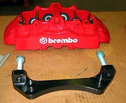

|
For anything other than drag racing, the Lightning brakes are its weak point: About the only performance aspect that didn't meet or surpass our expectations was the Lightning's behavior under maximum braking. As mentioned earlier, the actual distance required to stop the truck from 60 mph was impressively short. However, the behavior of the brake pedal when pressing hard on it was less than comforting. In addition to a massive amount of vibration, the pedal actually sank toward the floor. This sinking continued the entire time ABS was engaged and while it never completely ran out of travel, it seemed awfully close to the floor by the time the truck had stopped during our 60-to-zero brake tests. We're not sure what would have happened in a panic stop that began at 80 or 90 mph, but we're glad we never found out. This was the one obvious flaw in an otherwise stellar track performance from the Lightning. |
| For autocrossing or drag racing, the stock brakes will get by. For open track events, however, the stock brakes simply won't hold up. Stopping a 5,000 pound, 145 MPH truck is no easy task. As shown in the photos to the right (not my truck), in addition to nasty brake fade, the brakes may actually fail. In an SVT track event in a parking lot course, repeated braking from 100 on the back stretch heavily scored my front rotors after only about 10 minutes. |
|
Note that aftermarket brakes are not about shorter stopping distances -- we are only talking about repeatability here. As well stated by Brembo: At the speeds that stopping distance is generally measured from (60 to 70mph), the test is primarily testing the tire's grip on the pavement. As delivered from the manufacturer, nearly all vehicles are able to engage the ABS or lock the wheels at these speeds. Therefore, an increase in braking power will do nothing to stop the vehicle in a shorter distance. For this reason, we do not record stopping distances at this time. The Brembo systems will show their greatest advantages when braking from higher speeds, or when tasked with repeated heavy braking. The increased braking torque provides for maximum deceleration at speed, and the ability to absorb and quickly dissipate the intense heat generated during repeated braking insures that the braking system will perform at the same high level each time. |
|
There are only a handful of aftermarket or racing brake solutions for the Lightning, and most are pricey. The first is the Brembo Gran Turismo kit. The Brembos use aluminum Ferrari F50 calipers and full-floating rotor rings mounted to aluminum hats. The photo below is installed on my truck.
|
| Brake performance is a combination of leverage (the rotor diameter) and clamping force. The larger (14" versus 12") rotors will definitely provide more leverage. I am unsure of the clamping force, as this is a function of the relationship between the master cylinder bore and the caliper pistons. One neat thing abut the Brembos is that they use differential bores (40 and 44 mm), which provide for more linear application of braking pressure. Note: these brakes will fit under the '01-'02 wheels, but the calipers must be ground down a bit to fit under the '99-'00 wheels. The photos below show the difference between the Brembos and stock. |
|
Some have argued that the Brembos actually increase stopping distances (see above). The theory is that upsetting the balance of the front and rear brakes will upset the ABS system and cause longer stopping distances -- at least in a lockup-type panic stop -- because the rear brakes will be relatively weaker. There is no question, however, that the Brembos will shed heat much quicker than the stock brakes, making them way more repeatable. The stock brakes will overheat with a single 120-to-0 stop. The Brembos just keep on stopping. I did notice much better pedal feel (probably just due to new pads), but I have not noticed any improvement in stopping distances. I painted the rear calipers to match. |
|
The downside is that they cost $3,700--for the front wheels only. Ridiculous. I was lucky to find a set of used Brembos (relatively) cheap. Replacement rotors are pretty pricey also -- the cheapest that I could find was $588 delivered from RaceShopper. Installation notes can be found here. |
|
The AP Racing/Stillen kit is still in the stratosphere--$3,500. The AP calipers are six-piston, also with differential bores. AP parts are rumored to be less expensive than Brembo.
|
|
Another great option
is from
Stop
Tech (shown in the photo to the right). The
Stop Tech system looks to be of Brembo quality, but is apparently
priced about $1,000 lower ($2,800).
The application is not listed on the Stop Tech Web site, but the following was reported from "Silver Bolt": |
|
Talk to Robert (GM) or Matt and tell them Lightning Bill from Oregon sent you. A few small differences in the calipers. #1 is the top brace between the pads on the Stop-Tech, Brembo has none. This greatly reduces caliper flex which can lead to uneven pad and rotor wear. #2 the S/T caliper is a 4 piston caliper where all 4 pistons are 44mm in diameter. The Brembo caliper is also a 4 piston but uses a 40mm/44mm combination to compensate for the uneven pad wear. #3 The S/T caliper is setup to use Porsche pads which are available in an endless array of compounds and from many different manufacturers (read cheaper pads). The Brembo uses Ferrari F40/F50 pads (read more $$). Keep in mind these differences are only under extreme circumstances. The Brembo is a fantastic setup. I am no way intending to badmouth them. I am merely offering my findings. Check with S/T for any pricing. I did not buy the kit. I bought their calipers, pads, brake lines, and rotors. I made my own hubs and had used rotor hats and brackets. By no means a cheap system, but substantially less than the Brembo. For more images of the Stop Tech system, check out Silver Bolt's gallery. |
|
Brembo also has an 8-piston system which uses 15" rotors. The cost--a whopping $4,200. Plus, 20 inch or larger wheels are required. Tony Roma, the owner of the Harley pictured here (and from whom I bought my Brembos) reports that the new system is noticeably better than the original F50-based kit I have.

|
| Praise Dyno also makes a complete Lightning "system" (about $850), but that includes only cryogenically treated rotors and pads (retains the stock calipers). Click here for an article detailing the Praise Dyno system and its installation. |
| TCE Performance Products has a sub-$2,000 brake system. They use 13" rotors with Wilwood calipers. For the money, this is now the system to beat. Wilwood parts are less expensive than Brembo$ and by all reports, provide similar performance. The rotors are only $120 each, as opposed to the $300 Brembos. And Todd at TCE is reported to provide superior customer service. |
|
|